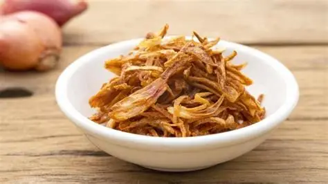
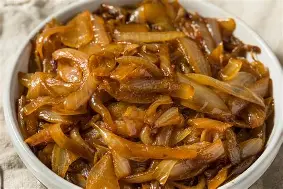

A cebola (Allium cepa) tem origem na Ásia Central e no Oriente Médio, com registros de cultivo que remontam a mais de 5.000 anos.Acredita-se que a cebola tenha surgido em regiões que hoje correspondem ao Irã, Paquistão, Índia e China, sendo cultivada desde tempos remotos e posteriormente levada para a Pérsia, de onde se espalhou pela África e Europa.Na Europa medieval, a cebola tinha grande valor econômico e era usada até como forma de pagamento de rendas. Com a expansão marítima, os colonizadores portugueses introduziram a cebola no Brasil, inicialmente no Rio Grande do Sul, e seu cultivo se espalhou com a chegada de imigrantes para outras regiões, como Santa Catarina, durante os séculos XVIII e XIX.
A maior parte da produção de cebola é realizada entre março e abril, aproveitando temperaturas mais amenas, menor incidência de chuvas e encurtamento do fotoperíodo, que são condições ideais para o crescimento inicial e bulbificação da planta.
O plantio pode ser feito de três formas principais:
Semeadura direta: Utiliza sementes em linhas simples ou duplas, com densidade ajustada de 30 a 45 plantas por metro linear para alcançar altos rendimentos.
Bulbinhos (soqueiras): Bulbos menores de culturas anteriores, plantados geralmente entre janeiro e março, com colheita posterior em abril a maio.
Mudas ou transplantes: Plantas jovens com 10–15 cm de altura, usadas para acelerar o ciclo, especialmente em climas menos favoráveis; o transplante ocorre 40 a 50 dias após a semeadura.
| Nome da Espécie | Nome Cientifico da Espécie |
| Cebola de cozinha | Allium cepa |
| Cebola de Inverno | Allium fistulosum Wintergreen |
| Cebolinha Japonesa | Allium fistulosum Nebuka |
| Cebola pérola | allium ampeloprasum |
| Alho-poró | allium ampeloprasum |
| Cebola Cipollini | allium ampeloprasum |
| Cebola Chalota | Allium ascalonicum |
| Cebola Egípcia | Allium cepa var. proliferum |
| Cebolinha | Allium schoenoprasum |
| Cebola Calçot | Allium cepa L |
Cebola de Cozinha: A cebola é um alimento simples, mas poderoso: seu consumo regular ajuda a reduzir colesterol, fortalecer o intestino, prevenir pressão alta e até diminuir o risco de câncer. Além disso, é rica em antioxidantes e fibras, sendo uma aliada natural para imunidade e saúde cardiovascular.
Cebola de Inverno: A cebola de inverno é especialmente benéfica para fortalecer a imunidade durante os meses frios, ajudando a prevenir gripes e resfriados, além de oferecer proteção cardiovascular e ação antioxidante. Seu consumo regular contribui para digestão saudável, controle da glicemia e alívio de sintomas respiratórios.
Cebolinha Japonesa: A cebolinha japonesa é um vegetal versátil e nutritivo, ela fortalece a imunidade, ajuda na digestão, regula a pressão arterial e ainda possui ação antioxidante e cicatrizante. É muito usada na culinária oriental e pode ser consumida crua ou cozida em diversos pratos.
Cebola Pérola: A cebola pérola é uma variedade pequena e delicada, muito usada em conservas e pratos refinados, mas também oferece benefícios importantes para a saúde, como ação antioxidante e ajuda a prevenir envelhecimento precoce, proteção cardiovascular, melhora da digestão, controle da pressão arterial e fortalecimento da imunidade.
Alho-Poró: O alho-poró é um vegetal leve e nutritivo que fortalece a imunidade, protege o coração, ajuda na digestão e ainda contribui para emagrecimento saudável. Ele é rico em fibras, vitaminas (A, C, K, B6) e minerais sendo, um aliado importante para a saúde geral.
Cebola Cipollini: A cebola Cipollini, conhecida por seu formato pequeno e achatado e sabor adocicado, oferece benefícios semelhantes às demais variedades de cebola: é rica em antioxidantes, ajuda na saúde cardiovascular, melhora a digestão e fortalece a imunidade. Além disso, por ser mais suave, é muito usada em pratos assados e caramelizados.
Cebola Chalota: A cebola Chalota é uma variedade aromática e adocicada que traz benefícios importantes para a saúde: fortalece o sistema imunológico, protege o coração, auxilia na digestão e ainda possui ação antioxidante e anti-inflamatória.
Cebola Egípcia:A cebola egípcia, também chamada de cebola andante, é uma variedade rara e muito nutritiva, ela fortalece a imunidade, protege o coração, ajuda na digestão e possui forte ação antioxidante e anti-inflamatória. Seu consumo regular pode contribuir para prevenção de doenças crônicas e melhora da saúde intestinal.
Cebolinha: A cebolinha é uma erva aromática muito usada no cheiro-verde e traz diversos benefícios à saúde,ela ajuda a regular a glicemia, protege o coração, fortalece a imunidade e ainda contribui para a saúde dos olhos e da digestão.
Cebola Calçot: A cebola Calçot, típica da Catalunha (Espanha), é uma variedade suave e adocicada que, além de ser muito apreciada em pratos tradicionais como a “calçotada”, oferece benefícios semelhantes às outras cebolas: fortalece a imunidade, protege o coração, melhora a digestão e possui ação antioxidante
Os únicos ingredientes necessários são:
Cebolas Cipollini;
Azeite de oliva;
Sal marinho;
Pimenta-preta (pode ser substituída por outra de sua preferência);
Tomilho fresco.
Depois de ter todos os ingredientes, preaqueça seu forno por alguns minutos. Misture as cebolas inteiras junto com o azeite de oliva e o tomilho fresco e a coloque na assadeira. Garantindo que estejam em uma boa distância uma entre a outra. Depois salpique o sal e a pimenta preta na quantidade desejada.
Coloque para assar por mais ou menos 35 minutos. Quando estiver dourada, pode retirar e servir. Você pode servi-la com arroz, carne e outros complementos.Lembrando, não espere um sabor muito forte e mais amargo e salgado. Nesse caso, ela é bem mais doce e suave, sendo perfeita para equilibrar com determinados outros alimentos.
Ingredientes
1 chalota média (cerca de 80g), descascada – prefira com casca roxa brilhante e firme ao toque.
70g de farinha de trigo (equivalente a cerca de ½ xícara – o suficiente pra envolver bem sem deixar empapado).
2g de pimenta-do-reino moída na hora (dá um toque mais aromático – se não tiver, use moída, mas não exagere).
Óleo vegetal neutro para fritura (canola, girassol ou milho – o suficiente pra cobrir as cebolas na panela, cerca de 500ml).
Modo de preparo
Descasque a chalota e corte em lâminas finíssimas – use uma faca bem afiada. Quanto mais fina, mais crocante fica.
Aqueça o óleo numa panela funda (ou frigideira alta) até atingir 150°C. Se não tiver termômetro, jogue um pedacinho de chalota: se borbulhar suavemente sem queimar em 10 segundos, tá no ponto.
Frite em pequenos lotes – não encha a panela, senão a temperatura cai e as cebolas ficam encharcadas. Leva uns 3 a 4 minutos por leva até dourar. O segredo é o dourado claro, não o marrom escuro.
Escorra com uma escumadeira e transfira direto pra um prato forrado com papel-toalha. Deixe repousar por 1 ou 2 minutos – é nesse momento que elas ficam crocantes de verdade.
Sirva morno ou frio. Vai bem em saladas, risotos, hambúrgueres, ou até sozinha, como petisco.

Ingredientes
15 g de cebolas-pérola descascadas
5 g de manteiga
1 colher (sobremesa) de mel
1 colher (café) de vinagre balsâmico
Sal e pimenta do reino a gosto
Modo de preparo
Leve ao fogo uma panela com um pouco de água e as cebolas-pérola já descascadas.
Deixe cozinhar por 10-15 minutos, para branquear.
Retire do fogo, escorra a água e seque as cebolas.
Numa panela, aqueça a manteiga.
Junte as cebolas e deixe refogar por alguns minutos em fogo baixo, mexendo sempre.
Em seguida adicione a colher (sobremesa) de mel e mexa por 5 minutos, até reduzir.
crescente a colher (café) de vinagre balsâmico (ou vinagre de vinho tinto), sal e pimenta do reino a gosto.
Misture, deixe por mais alguns segundos e retire do fogo.
Sirva como entrada, com pão, ou com salada ou para acompanhar carne assada ou grelhada.
